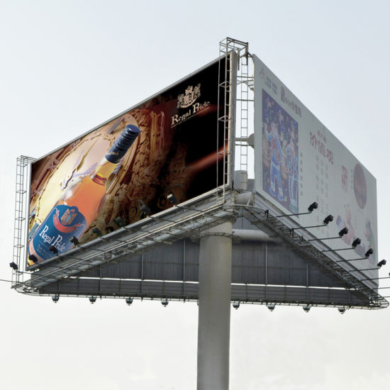
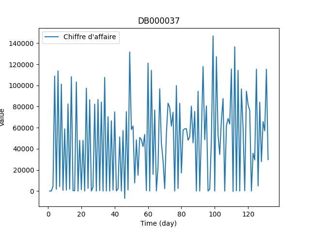

|
Dildar Ali
I am a Ph.D. Research Scholar being advised by Dr. Suman Banerjee and Dr. Yamuna Prasad in the CSE Department at Indian Institute of Technology Jammu, India since 2022. I primarily work in the area of Submodular Functions, Graph Theory, and Graph Algorithms.
I have completed my M.Tech in Computer Science and Engineering from Aliah University (A State University), Kolkata, India under the supervision of Dr. Abhishek Das (Associate Professor, AU, Kolkata) in 2020. I have also worked as Project Associate at Indian Institute of Technology Bhilai, India under the supervision of Prof. Rajat Moona (Director, IIT Bhilai) and Dr. Dhiman Saha (Assistant Professor, IIT Bhilai) in a MeitY-funded research project.
Email /
Google Scholar /
Twitter /
Github /
Linkedin
|
|
|
Research
I'm interested in Submodularity in Machine Learning and Artificial Intelegence, Optimization, and Graph Theory . Representative papers are highlighted.
|
|

|
Influential Billboard Slot Selection using Pruned Submodularity Graph
Dildar Ali,
Suman Banerjee,
Yamuna Prasad,
International Conference on Advanced Data Mining and Applications, 2022
Paper Link
Here, for a given trajectory database D and its corresponding billboard database B, the problem of Influential Billboard Slot Selection solved for a subset of k billboard slots such that the influence is maximized.
|
|

|
Deep Learning Approaches to Improve Effectiveness and Efficiency for Time Series Prediction
Dildar Ali,
Abhishek Das,
International Conference on Computational Intelligence, Data Science and Cloud Computing, 2021
Paper Link
|
|
{kind=link}